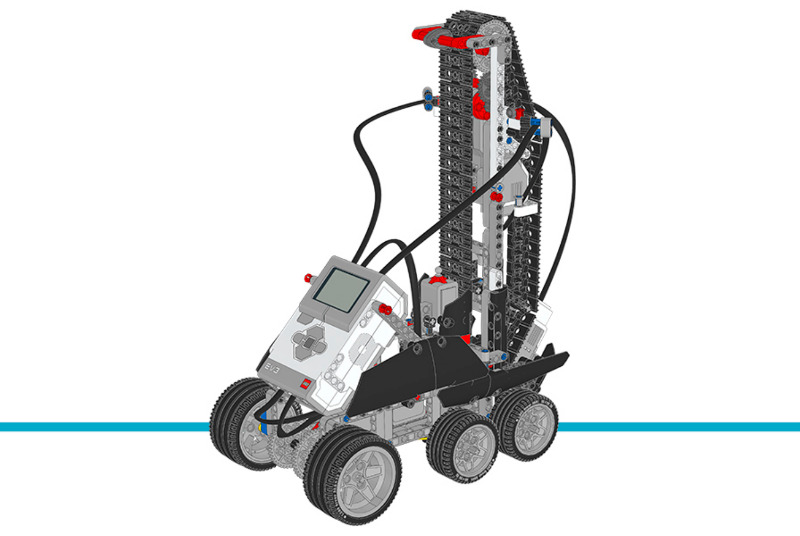

ステアクライマー¶
このサンプルプロジェクトでは、ステアクライマーがEV3 Brickのボタンで選んだ 段数の階段を上ります。詳しくは、下のプログラム内のコメントも確認してください。
組み立て説明書
こちらから拡張セットモデルの組み立て説明書をすべて確認できます。また、 このリンクからステアクライマーの説明書に直接アクセスできます。

Figure 32 パピー
サンプルプログラム
#!/usr/bin/env pybricks-micropython
"""
Example LEGO® MINDSTORMS® EV3 Stair Climber Program
---------------------------------------------------
This program requires LEGO® EV3 MicroPython v2.0.
Download: https://education.lego.com/en-us/support/mindstorms-ev3/python-for-ev3
Building instructions can be found at:
https://education.lego.com/en-us/support/mindstorms-ev3/building-instructions#building-expansion
"""
from pybricks.hubs import EV3Brick
from pybricks.ev3devices import Motor, GyroSensor, TouchSensor
from pybricks.parameters import Port, Direction, Button
from pybricks.tools import wait
from pybricks.media.ev3dev import Font, SoundFile
# EV3 Brickを初期化します。
ev3 = EV3Brick()
# 前輪を駆動するフロントモーターを設定します。正の速度値で
# ロボットが前進するように、モーターの回転方向を
# 反時計回りに設定します。
front_motor = Motor(Port.B, Direction.COUNTERCLOCKWISE)
# 後輪を駆動するリアモーターを設定します。正の速度値で
# ロボットが前進するように、モーターの回転方向を
# 反時計回りに設定します。
rear_motor = Motor(Port.A, Direction.COUNTERCLOCKWISE)
# 後部構造を持ち上げるリフトモーターを設定します。8歯、
# 24歯、40歯のギアが接続されています。正の速度値で
# 後部構造が上に動くように、モーターの回転方向を
# 反時計回りに設定します。
lift_motor = Motor(Port.D, Direction.COUNTERCLOCKWISE, [8, 24, 40])
# ジャイロセンサーをセットアップします。ロボットの角度を測るために使います。
# ケーブル接続時とEV3起動中は、ジャイロセンサーとEV3を
# 動かさないでください。
gyro_sensor = GyroSensor(Port.S2)
# タッチセンサーをセットアップします。後部構造が
# 最大位置まで動いたことを検出するために使います。
touch_sensor = TouchSensor(Port.S3)
# 非常に大きなフォントを使います
big_font = Font(size=24)
ev3.screen.set_font(big_font)
# 後部構造を初期化します。構造を動かすにはリアモーターと
# リフトモーターの両方を同期して動かす必要があります。
# まず、リアモーターでロボットを後退させながら、リフトモーターで
# タッチセンサーが押されるまで後部構造を上げます。次に、
# リアモーターでロボットを前進させながら、リフトモーターで
# 後部構造を一定角度だけ下げて開始位置に移動します。
# 最後に、リフトモーターの角度を「0」にリセットします。
# つまり、後で「0」まで動かすとこの開始位置に
# 戻ることになります。
rear_motor.dc(-20)
lift_motor.dc(100)
while not touch_sensor.pressed():
wait(10)
lift_motor.dc(-100)
rear_motor.dc(40)
wait(50)
lift_motor.run_angle(-145, 510)
rear_motor.hold()
lift_motor.run_angle(-30, 44)
lift_motor.reset_angle(0)
gyro_sensor.reset_angle(0)
# steps変数を0で初期化します。
steps = 0
# このループはBrick Buttonsをチェックしてsteps変数を
# 更新・表示します。中央ボタンが押されるまで繰り返します。
while True:
# steps変数を画面に表示します。
ev3.screen.clear()
ev3.screen.draw_text(70, 50, steps)
wait(200)
# いずれかのBrick Buttonが押されるまで待ちます。
while not any(ev3.buttons.pressed()):
wait(10)
# Up Buttonが押されているか確認し、押されていれば
# steps変数を1増やします。
if Button.UP in ev3.buttons.pressed():
steps += 1
# Down Buttonが押されているか確認し、押されていれば
# steps変数を1減やします。
elif Button.DOWN in ev3.buttons.pressed():
steps -= 1
# steps変数が負の数にならないようにします。
if steps < 0:
steps = 0
# 中央ボタンが押されたら、ループを抜けます。
elif Button.CENTER in ev3.buttons.pressed():
break
# このループはsteps変数で指定された段数の階段を
# 上ります。steps変数が0になるまで繰り返します。
while steps > 0:
# フロントモーターとリアモーターを動かしてロボットを前進させます。
front_motor.dc(100)
rear_motor.dc(90)
# ロボットの角度が少なくとも10度になるまで動き続けます。
while gyro_sensor.angle() < 10:
wait(10)
# リフトモーターを動かして後部構造を上げながら、
# 同時にフロントモーターとリアモーターも動かします。
lift_motor.dc(90)
front_motor.dc(30)
rear_motor.dc(15)
# タッチセンサーが押されるか、ロボットの角度が
# -3度未満になるまで、後部構造を上げ続けます。
while not touch_sensor.pressed():
if gyro_sensor.angle() < -3:
break
wait(10)
lift_motor.hold()
# フロントモーターとリアモーターでロボットをしばらく
# 前進させます。
front_motor.dc(60)
rear_motor.dc(100)
wait(1300)
# 音を鳴らし、後部構造を開始位置まで引き上げます。
# 同時にフロントモーターとリアモーターで
# ゆっくり前進し続けます。
ev3.speaker.play_file(SoundFile.AIR_RELEASE)
front_motor.dc(30)
rear_motor.dc(30)
lift_motor.run_target(160, 0)
# 「steps」変数を更新して画面に表示します。
steps -= 1
ev3.screen.clear()
ev3.screen.draw_text(70, 50, steps)
# ロボットを段の上で安定させてプログラムを終了します。
front_motor.dc(100)
rear_motor.dc(90)
wait(2000)
front_motor.hold()
rear_motor.hold()
wait(5000)